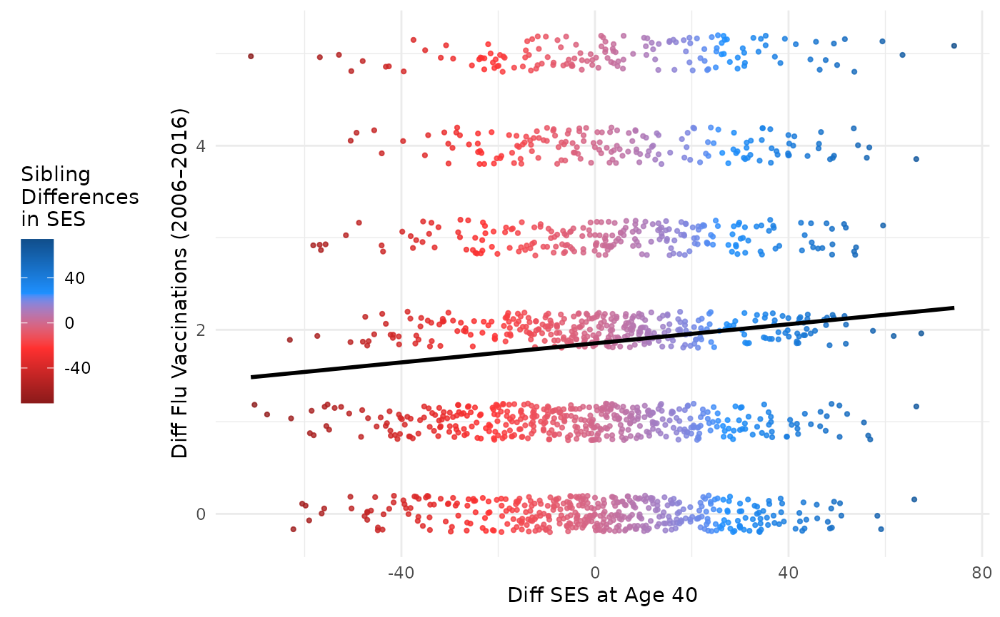

This demonstrates how to plot data from the discord
package. The data used in this example is from the NLSY79 dataset, which
contains information on flu vaccination and socioeconomic status (SES)
for kinship pairs. These plots are inspired by the work of Garrison and
Rodgers (2016), but updated to reflect improvements in the ggplot2
package.
Data Prep
The data used in this example is from the NLSY79 dataset, which contains information on flu vaccination and socioeconomic status (SES) for kinship pairs. The data is filtered to include only those individuals who are housemates and have a relatedness of 0.5. More details on the kinship link building process can be found in the regression vignette.
Data Cleaning
## Setup: Use discord_data
# Visualizing the Results
library(discord)
library(NlsyLinks)
library(tidyverse)## ── Attaching core tidyverse packages ──────────────────────── tidyverse 2.0.0 ──
## ✔ dplyr 1.1.4 ✔ readr 2.1.5
## ✔ forcats 1.0.0 ✔ stringr 1.5.1
## ✔ ggplot2 3.5.2 ✔ tibble 3.2.1
## ✔ lubridate 1.9.4 ✔ tidyr 1.3.1
## ✔ purrr 1.0.4
## ── Conflicts ────────────────────────────────────────── tidyverse_conflicts() ──
## ✖ dplyr::filter() masks stats::filter()
## ✖ dplyr::lag() masks stats::lag()
## ℹ Use the conflicted package (<http://conflicted.r-lib.org/>) to force all conflicts to become errors##
## Attaching package: 'gridExtra'
##
## The following object is masked from 'package:dplyr':
##
## combine##
## Attaching package: 'janitor'
##
## The following objects are masked from 'package:stats':
##
## chisq.test, fisher.test
# Load the data
data(data_flu_ses)
# Get kinship links for individuals with the following variables:
link_vars <- c(
"FLU_total", "FLU_2008", "FLU_2010",
"FLU_2012", "FLU_2014", "FLU_2016",
"S00_H40", "RACE", "SEX"
)
link_pairs <- Links79PairExpanded %>%
filter(RelationshipPath == "Gen1Housemates" & RFull == 0.5)
df_link <- CreatePairLinksSingleEntered(
outcomeDataset = data_flu_ses,
linksPairDataset = link_pairs,
outcomeNames = link_vars
)
consistent_kin <- df_link %>%
group_by(SubjectTag_S1, SubjectTag_S2) %>%
count(
FLU_2008_S1, FLU_2010_S1,
FLU_2012_S1, FLU_2014_S1,
FLU_2016_S1, FLU_2008_S2,
FLU_2010_S2, FLU_2012_S2,
FLU_2014_S2, FLU_2016_S2
) %>%
na.omit()
# Create the flu_modeling_data object with only consistent responders.
# Clean the column names with the {janitor} package.
flu_modeling_data <- semi_join(df_link,
consistent_kin,
by = c(
"SubjectTag_S1",
"SubjectTag_S2"
)
) %>%
clean_names()Creating the Discord Data
Now that we have prepared the data, we can restructure data with
discord_data().
discord_flu <- discord_data(
data = flu_modeling_data,
outcome = "flu_total",
predictors = "s00_h40",
id = "extended_id",
sex = "sex",
race = "race",
pair_identifiers = c("_s1", "_s2"),
demographics = "both"
) %>%
filter(!is.na(s00_h40_mean), !is.na(flu_total_mean))## Warning: Specified id column does not contain unique values for each kin-pair.
## Adding row-wise ID for restructuring data into paired format for analysis.
## For more details, see <https://github.com/R-Computing-Lab/discord/issues/6>.Because we are interested in the differences between kin, we will
create a new variable, ses_diff_group, which classifies the
difference in SES into three groups: “More Advantage”, “Equally
Advantage”, and “Less Advantage”. We will use this variable to add
marginal density plots to the main scatter plot.
discord_flu <- discord_flu %>%
mutate(
# # Classify Difference Grouping
ses_diff_group = factor(case_when(s00_h40_diff > 0.33 ~ "More Advantage",
s00_h40_diff < -0.33 ~ "Less Advantage",
abs(s00_h40_diff) <= 0.33 ~ "Equally Advantage"),
levels = c("Less Advantage",
"Equally Advantage",
"More Advantage"))
)## Warning: Using `size` aesthetic for lines was deprecated in ggplot2 3.4.0.
## ℹ Please use `linewidth` instead.
## This warning is displayed once every 8 hours.
## Call `lifecycle::last_lifecycle_warnings()` to see where this warning was
## generated.Within Family
# Within Family
## Setup: Use discord_data
discord_flu <- discord_data(
data = flu_modeling_data,
outcome = "flu_total",
predictors = "s00_h40",
id = "extended_id",
sex = "sex",
race = "race",
pair_identifiers = c("_s1", "_s2"),
demographics = "both"
) %>%
filter(!is.na(s00_h40_mean), !is.na(flu_total_mean)) %>%
mutate(
# # Classify Difference Grouping
ses_diff_group = factor(case_when(s00_h40_diff > 0.33 ~ "More Advantage",
s00_h40_diff < -0.33 ~ "Less Advantage",
abs(s00_h40_diff) <= 0.33 ~ "Equally Advantage"),
levels = c("Less Advantage",
"Equally Advantage",
"More Advantage"))
)## Warning: Specified id column does not contain unique values for each kin-pair.
## Adding row-wise ID for restructuring data into paired format for analysis.
## For more details, see <https://github.com/R-Computing-Lab/discord/issues/6>.
shading <- c("firebrick4", "firebrick1", "dodgerblue1", "dodgerblue4")
# Color scale settings
max_val <- max(abs(discord_flu$s00_h40_diff), na.rm = TRUE)
values <- seq(-max_val, max_val, length = length(shading))
# Main scatter plot
main_plot <- ggplot(discord_flu, aes(x = s00_h40_diff,
y = flu_total_diff, colour = s00_h40_diff)) +
geom_point(size = 0.8, alpha = 0.8, na.rm = TRUE,
position = position_jitter(w = 0.2, h = 0.2)) +
geom_smooth(method = "lm", se = FALSE, color = "black") +
scale_colour_gradientn(
name = "Sibling\nDifferences\nin SES",
colours = shading,
na.value = "#AD78B6",
values = scales::rescale(c(min(discord_flu$flu_total_diff, na.rm = TRUE),
mean(discord_flu$flu_total_diff, na.rm = TRUE),
max(discord_flu$flu_total_diff, na.rm = TRUE)))
) +
theme_minimal() +
theme( legend.position = "left")+
labs(x = "Diff SES at Age 40", y = "Diff Flu Vaccinations (2006–2016)")
main_plot